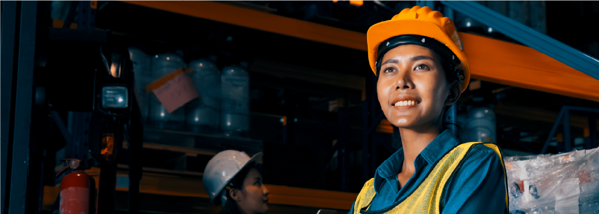
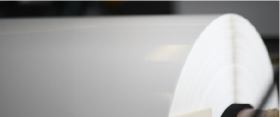

我們選擇純淨材料、無溶劑製程、提升能源使用效率、優化生產流程，
以及降低運輸與包裝中的碳排放來實踐。

確保所有工作夥伴享有公平待遇，並受到基本權利保障。
我們提供安全且健康的工作條件、公平薪酬與合理工時，我們推動永續發展並積極遵守勞工法規與國際標準，促進職場平等與尊重，進而打造更負責任且具社會價值的營運模式。
eTINPO 秉持永續發展的理念，致力於減少環境汙染，推動綠色製造。
我們關注產品的功能性與舒適度，並優先考量材質的環保與永續性。
透過與合作夥伴共同努力，我們積極參與社區公益活動、推動環境保護計畫，並致力於創造公平且安全的工作環境。
eTINPO 致力於推動循環經濟，將永續發展的理念融入產品設計與生產流程。我們承諾使用乾淨原料，以減少對地球的負擔。此外，我們關注產品生命周期的管理，確保材料在使用後能夠被回收再利用，實現資源的高效循環。

eTINPO堅持確保每個生產環節都符合環保與安全標準，為消費者提供真正安心無毒的產品。我們致力於使用無溶劑、低能耗的製造技術，絕無化學物質的使用與排放，確保產品對人體與環境皆安全無害。